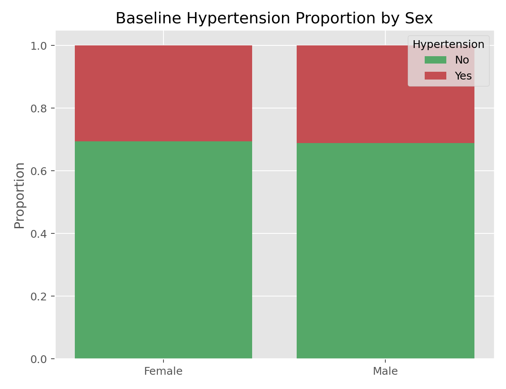

描述统计与统计推断 · 02·13
Pearson卡方独立性检验
Pearson Chi-Squared Test of Independence
Pearson卡方独立性检验（Pearson Chi-Squared Test of Independence）
§1
方法概览
1.1 定义
Pearson 卡方独立性检验用于判断两个分类变量在列联表中是否独立，是分类数据分析的基础方法。
1.2 它主要解决什么问题
- 研究问题：分类暴露与分类结局之间是否存在关联。
- 适用任务：列联表独立性检验。
- 常见医学场景：治疗组与结局、吸烟与疾病、性别与并发症之间的关联分析。
1.3 直觉理解
如果两个分类变量独立，那么各单元格实际人数应该和“按边际比例乘出来的期望人数”差不多。差得越离谱，越不支持独立。
§2
数学形式
2.1 核心公式
$$ \begin{aligned} \hat\mu_{ij} &= \frac{n_{i\cdot}n_{\cdot j}}{n} \\ X^2 &= \sum_{i=1}^{I}\sum_{j=1}^{J}\frac{(n_{ij} - \hat\mu_{ij})^2}{\hat\mu_{ij}} \\ \mathrm{df} &= (I - 1)(J - 1) \end{aligned} $$
2.2 参数或统计量含义
- $n_{ij}$：观察到的单元格频数。
- $\hat\mu_{ij}$：零假设下的期望频数。
- $X^2$：卡方统计量。
2.3 关键假设
- 观测相互独立。
- 数据是频数而不是比例。
- 期望频数不能太小；常见经验是平均单元格频数至少约 5。
§3
数据形式与输入输出
3.1 适合的数据形式
- 自变量类型：分类变量。
- 因变量类型：分类变量。
- 数据结构：二维列联表最典型。
- 是否适合高维数据：稀疏表不合适。
- 是否适合缺失较多数据：需先决定缺失是否作为单独类别。
- 是否适合删失数据：不适合。
- 是否适合重复测量数据：不适合，配对分类数据应考虑 McNemar。
3.2 示例表格
卡方独立性检验最适合直接作用在列联表上。下面给出一个按性别和高血压状态整理的 2×2 表：
| SEX | PREVHYP = No | PREVHYP = Yes |
|---|---|---|
| Female | 1671 | 734 |
| Male | 1246 | 564 |
3.3 输入与产出
输入
- 输入数据：列联表或原始分类数据。
- 关键变量：两个分类变量。
- 需要预处理的内容：构造列联表，核对频数。
产出
- 模型对象/统计结果：卡方值、自由度、p 值。
- 参数估计：不直接给效应量，通常应补充 OR、RR 或 Cramer's V。
- 预测结果：无。
- 不确定性指标：主要是检验结果。
§4
适用场景
- 适合：大样本列联表独立性检验。
- 不适合：2x2 小样本稀疏表、配对分类数据。
- 使用前需要特别检查的点：期望频数、研究设计是否独立抽样。
§5
实现
常用包：
pandasscipy
import pandas as pd
from scipy import stats
df = pd.DataFrame({
"treatment": ["A", "A", "A", "B", "B", "B", "B"],
"response": ["yes", "no", "yes", "yes", "no", "no", "yes"]
})
table = pd.crosstab(df["treatment"], df["response"])
chi2, p, dof, expected = stats.chi2_contingency(table)
print(chi2, p, dof)
print(expected)
常用包：
stats
tab <- matrix(c(30, 20, 18, 32), nrow = 2, byrow = TRUE)
chisq.test(tab)
§6
结果如何解释
- 核心结果看什么：是否有证据拒绝独立性。
- 每个主要参数如何解释：卡方值越大，观察频数与期望频数偏离越大。
- 临床或医学意义如何表达：显著后应进一步给出方向和大小，如 OR 或 RR。
- 常见误读：卡方显著不告诉你差异在哪个单元格，也不告诉你效应大小。
§7
推荐可视化
- 列联表热图。
- 堆叠条形图。
- 马赛克图。
7.1 图像示例
下图用堆叠比例条形图展示性别与高血压状态的关联结构，适合作为卡方独立性检验的配套展示。

§8
优势、局限与常见坑
优势
- 简单标准。
- 适用广泛。
- 是分类数据分析的基础入口。
局限
- 对稀疏数据不稳健。
- 不给效应量方向与大小。
- 不控制混杂。
常见坑
- 期望频数很小时仍机械使用。
- 把比例数据当频数重复输入。
- 忽视配对设计或分层结构。
§9
与相近方法的区别
- 和 Fisher 精确检验的区别：Fisher 更适合 2x2 小样本。
- 和 McNemar 的区别：McNemar 用于配对分类数据。
- 应该如何选择：大样本独立列联表优先卡方，小样本 2x2 表优先 Fisher。
§10
医学研究中的典型应用
- 比较治疗组与对照组不良事件发生率。
- 分析暴露状态与疾病有无的关联。
- 描述基线分类变量平衡性。
§11
相关方法
§12
参考资料
- Agresti A. An Introduction to Categorical Data Analysis. 3rd ed. Wiley; 2018.
- SciPy Developers.
scipy.stats.chi2_contingency. SciPy API Reference. https://docs.scipy.org/doc/scipy/reference/generated/scipy.stats.chi2_contingency.html （访问日期：2026-07-02） - R Core Team.
chisq.test. R Manual. https://stat.ethz.ch/R-manual/R-devel/library/stats/html/chisq.test.html （访问日期：2026-07-02）
— 黑盒词典 · 02·13 —